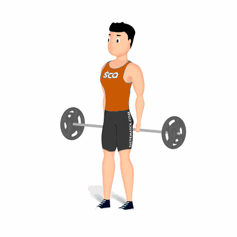

Encolhimento de Ombros por Trás com Barra

Exercício para fortalecimento e hipertrofia dos músculos da região dos ombros, com enfoque na lateral dos deltoides.
Ficha Técnica
Tipo: Musculação
Grupo Muscular: Ombro
Aparelho: Nenhum
Músculos: Nenhum
Como realizar
- Posicione uma barra reta sobre um suporte ou solo;
- Em pé, segure a barra atrás do corpo com as palmas voltadas para a parte posterior em uma distância similar a dos ombros;
- Suspenda o peso um pouco abaixo dos glúteos, deixando os cotovelos estendidos e os ombros encaixados para trás;
- O tronco deve ficar reto e levemente inclinado para trás, está é a posição inicial do exercício;
- Suba a barra encolhendo os ombros para aproximar as escápulas e contrair a musculatura do trapézio;
- Depois de segurar a contração por um instante, retorne à posição inicial;
- Repita os movimentos, conforme o número de repetições orientado pelo professor.
 RC STORE
RC STORE